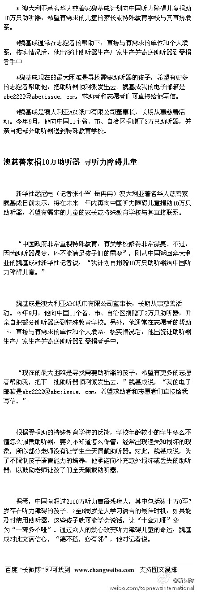
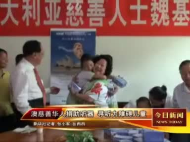

//@李建中心理咨询师: 转发 //@李冰冰://@舒淇://@宁财神: 强力求转！@新华国际:【微公益：寻找需要助听器的孩子】澳大利亚著名华人慈善家魏基成计划在中国捐助10万只助听器，但魏先生最大的困难在于寻找有需要的孩子。他希望有志愿者帮助将这批助听器派发出去，求助者也可直接给他写信联系。魏基成的电子邮箱是abc2222@abctissue.com。 澳慈善华人捐助听器 寻听力障碍儿童  3万次播放 02:32
 澳慈善华人捐助听器 寻听力障碍儿童
澳慈善华人捐助听器 寻听力障碍儿童